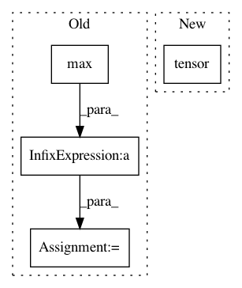

631d4ee2ece28da70d6e22201129f39b4f1dc586,torch_geometric/data/temporal.py,TemporalData,__getitem__,#TemporalData#Any#,17
Before Change
mask = self.t == idx
elif isinstance(idx, slice):
start = idx.start if idx.start is not None else int(self.t.min())
stop = idx.stop if idx.stop is not None else int(self.t.max() + 1)
assert idx.step is None and start <= stop
mask = (self.t >= start) & (self.t < stop)
else:
raise IndexError(
f"Only integers, slices (`:`), and strings are valid indices "
f"(got {type(idx).__name__}).")
After Change
return getattr(self, idx, None)
if isinstance(idx, int):
idx = torch.tensor([idx])
if isinstance(idx, (list, tuple)):
idx = torch.tensor(idx)
elif isinstance(idx, slice):
pass
In pattern: SUPERPATTERN
Frequency: 3
Non-data size: 4
Instances
Project Name: rusty1s/pytorch_geometric
Commit Name: 631d4ee2ece28da70d6e22201129f39b4f1dc586
Time: 2020-10-26
Author: matthias.fey@tu-dortmund.de
File Name: torch_geometric/data/temporal.py
Class Name: TemporalData
Method Name: __getitem__
Project Name: PIQuIL/QuCumber
Commit Name: 364948bf0bb46f9bc3809bbe0a63d09348994444
Time: 2018-08-04
Author: emerali@users.noreply.github.com
File Name: tests/positiveGrads_test.py
Class Name:
Method Name: partition
Project Name: PIQuIL/QuCumber
Commit Name: 364948bf0bb46f9bc3809bbe0a63d09348994444
Time: 2018-08-04
Author: emerali@users.noreply.github.com
File Name: tests/complexGrads_test.py
Class Name:
Method Name: partition